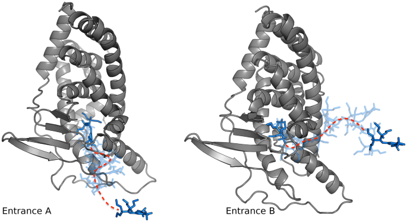
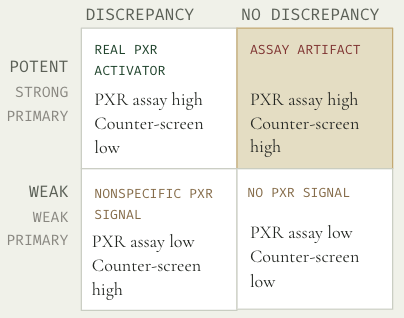
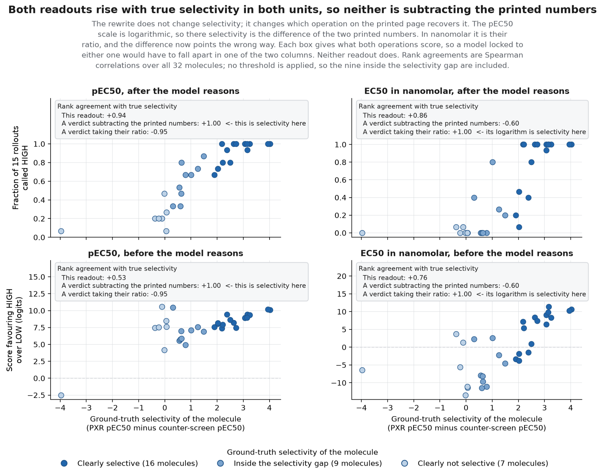
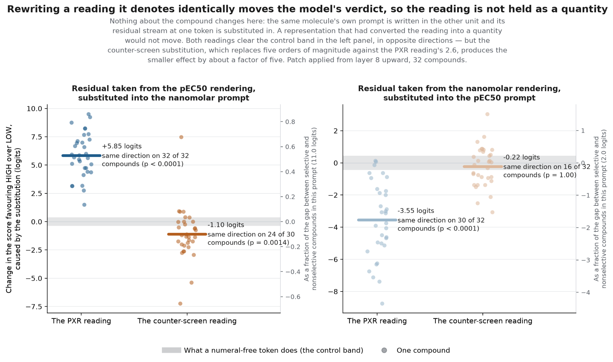
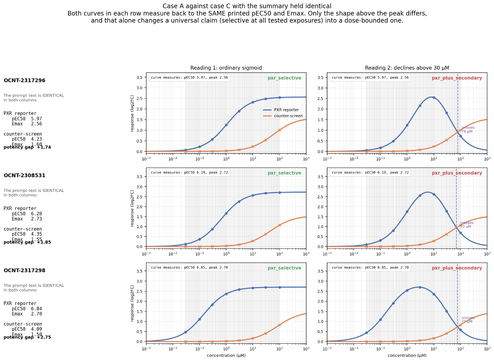
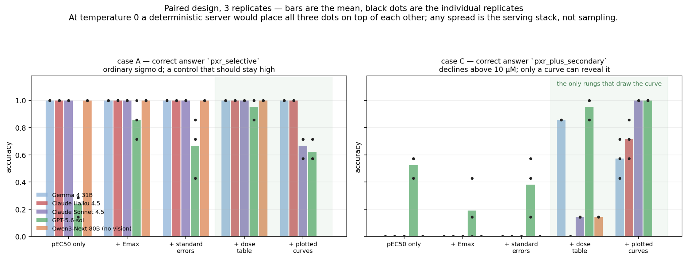
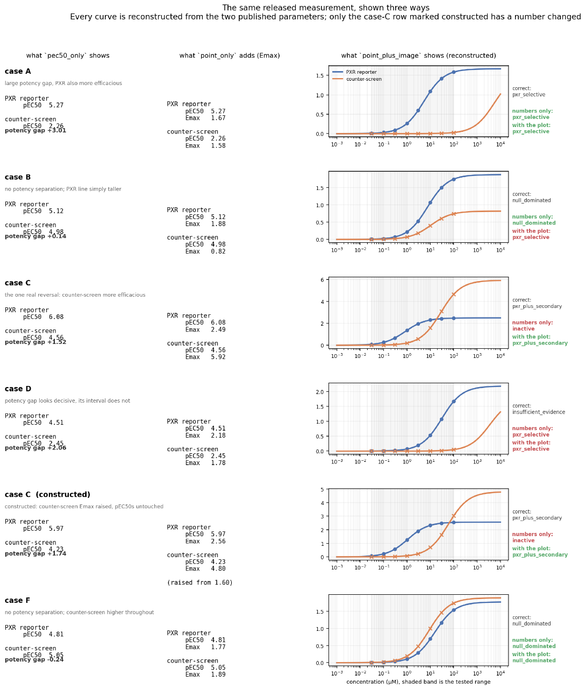

The use of models for scientific reasoning is a fascinating problem. While there are many benchmarks that investigate progress that LLMs make for being able to process/understand various biological datasets, there remain many open questions for scientists. That is, how much of 'causality' do models understand and how can we investigate representations of this?
There has been some previous work on this. One paper asks whether an internal mechanism in a neural network implements a higher-level causal model1. In another interesting direction, a CauSciBench2 pre-print asked if LLMs can automate causal inference in real-world scientific research, including "method and variable selection to computation of causal effects and statistical interpretation in the context of real-world research problems".
To at least partially explore this question, we are using the PXR dataset by Huggingface, with over 11,000 screened compounds. They also provide assay data, information about molecule structure and novel results that many models have not been trained on yet. The overall motivation and guiding question is: can we see how models are more likely to use 'shortcuts' for reasoning? For example, if given the curve for null and pxr assay data AND the pec50 and emax values in a misguiding situation where you need the curves to have a complete understanding of the situation, does the model default to using arithmetic shortcuts, or does it actually try to reason? How can we probe activations? Can we steer? E.g. steer a model to ignore text information, or get it to understand that it SHOULD be uncertain? Can we isolate proxies for causal reasoning?
A little bit about the terms we used above:
- PXR is a ligand-dependent transcription factor that regulates the expression of various metabolic enzymes and drug transporters critical for breaking down drugs.
- A null assay can be thought of as a 'control'
- Pec50 is the half-maximal effective concentration of a drug or agonist (e.g. amount of drug you need to have half the maximal effect).
- Emax is the maximum possible effect or maximal efficacy that a drug can produce when binding to its receptors (aka adding a greater concentration of the drug won't have a greater effect).
Background information about the dataset

Importance of PXR and Null Assays
- The counter-screen is a cell line with PXR disabled, so a real PXR activator cannot light it up.
- Analogous to the placebo group in a clinical trial, it is the perfect control to catch all reasons the typical PXR assay might be a false positive.
The two reporter assays sort compounds four ways.

However, this is not the complete story. Assay results are dose-dependent, which means that there are numerous dose-response curves that could fit the same pec50 and emax values.
Question 1: Does the model actually understand selectivity?
Actually can we show a demonstration of a naive LLM given PXR data which automatically uses it without raising any questions at all? Can you provide an example from one of the larger models? Qwen 3.5/3.6 or Gemma 4 31b?
So every compound in our dataset gets tested twice: once in PXR reporter assay, and once in a "null" counter-screen that uses the same cellular machinery but without functional PXR signaling. If a compound lights up in both, that is a red flag – it might not be doing anything specific to PXR at all. Selectivity is the gap between the two: strong in the real assay and quiet in the null.
So with H1, we ask a simple question: when a language model reads those two numbers and renders a verdict, is it actually reasoning about selectivity as its own concept, distinct from "how potent is this compound?" – or is it doing something shallow that happens to look right most of the time? And if selectivity really is there, can we find where in the model it lives, and prove the model uses it rather than just represent it?
So, how would we even probe for selectivity? Unlike potency, selectivity is not one of the numbers that we include in the prompt. It can be thought of as a relationship between two measurements (difference between the PXR and nul pEC50s), where Selectivity = pEC50(PXR) - pEC50(null). As such, we can control when the information required to construct a selectivity representation becomes available to the model we're probing.
As such, we rendered the same assay information in two possible orders: PXR pEC50 text input first, and then null pEC50. And the same information, but in the reverse order. We then probed the residual stream at the number-token positions, based on where we included input for the PXR and null assays respectively. In other words, when PXR appears first, its token contains the potency reading but because the model hasn't seen the null reading, it cannot determine selectivity. However, when PXR appears second, and we probe there, both measurements are already available and we can probe for selectivity there. As such, we can ask both if selectivity can be decoded, and where this representation carrying information about selectivity appears.
The first step is to know whether the model can uncover the concept of potency and selectivity, in order to do so we'd like to find a linear direction which could describe these two concepts. The first result is both potency and selectivity are linearly decodable from the residual stream. Potency reads out at its own number token position and selectivity decodes once both numbers have been read. It tells us both readings are present and linearly available.
Now we know that these concepts are present in residual stream, however we want to know whether the concept of selectivity is an abstract one or an arithmetic concept.
One way to uncover this is through reparameterization. If the model is doing subtraction of the printed digits, we can break it by changing the unit from pEC50 to EC50. So we render every prompt in EC50 nanomolar instead of pEC50, using EC50 = 10^(9−pEC50). Now a potent compound prints a small number, and selectivity becomes a ratio instead of a difference. A model subtracting the digits should invert while a model tracking the real quantity should not.
It doesn't invert. The verdict tracks true selectivity in both notations, rank agreement +0.94 in pEC50 and +0.86 in nM so naive subtraction can be ruled out.
However, It does not establish a construct. Instead it shows something more general than naïve subtraction, but it can't tell us whether it is a construct or a specific arithmetic different from subtraction.

What we'd like to know is whether changing to an other unit could change the verdict? So we intervene on the same compound and render in pEC50 and in EC50. We take the residual stream at the number token from one rendering and patch it into the other, then observe the verdict before reasoning.
If the model had converted the reading into a unit invariant quantity, swapping notations should do nothing, we would observe in that case that both patched readings would land in the grey band.

Instead, what we find is, both reading are outside of the band and patching moves the verdict for PXR reading (+5,85 logits and -3,55 logits in both directions, stronger than PXR_null). So at the number token, the digit is not a converted quantity, the model is reading the quantity. This rules out the notation invariance in the pre-reasoning phase.
Results
After these different experiments what we find is that it's not a construct (unidentifiable by probing and invalidated at the number token by patching). It's also not a naive subtraction and not a unit-independent quantity. What survives is narrow and specific, an arithmetic more general than subtraction and on numbers the model never abstracts away from how they were written.
Question 2: How is selectivity really encoded in LLMs. Does it go beyond arithmetic?
We attempt to answer a proxy for this question by giving the model just the Emax and pEC50 values for the null and PXR assays, in which just having these, if you do just the arithmetic on summary statistics like Hill coefficients, can reasonably give you a conclusion about the dose-response of the molecule (e.g. that the molecule is selective for PXR). However, remember that the response is dose-dependent.
Take a look at the visualization below. The difference between Case A and Case C is shown here, where they have the same pec50 and emax, but the curves look different and reveal a different 'reality'.

There are seven molecules in the dataset that fall under the defined terms of Case A (left graphs) and Case C (right graphs), so we simulated some dose-dependent response curves. For this experimental design, we use the predicted 'real version' which is either Case A or Case C, and then simulate the curve for what it would look like if crossing/not crossing, and then synthesize the curve for the alternative case to have a control. In other words, Case A is consistent with just the pec50 and emax, but Case C is not. This is just a behavioural task, for which we did do some internal probing and activation work, but that's a blog post for another time. We also had some other cases (B, D, E, F) that you can read more about in the 'appendix' section of this blog post.
Results
I ran case A as a baseline. All models guess correctly basically all the time (except for Sol and Sonnet, which seem to enjoy hedging). In case c, they flip successfully from about 50-75% of the time when given the curve as an image, and less frequently when given the curve as a table. But this also depends on the model. This is curious, because if the models were actually using the dose table or curve, they should flip all the time. Remember that Curve A matches the naive math-based pEC50 and Emax conclusion while Curve C reveals info that is not naively captured by JUST subtracting pec50 and emax and would lead to a diff conclusion.

Conclusion
Why does this matter?
Toy tasks are easy to study, but can miss failures. Scientific experiments are more realistic, with controls and known sources of error. Using this approach, we can compare: What the model says (its prediction), what's actually true (wet-lab experiment assay results) and what interp tools claim (investigated through probe · steering · patching). PXR could become a first example of a broader approach: use compelling scientific tasks to actually audit for the kinds of problems the position papers pointed out.3
Appendix

References
Joshi, S., Mueller, A., Klindt, D., Brendel, W., Reizinger, P., & Sridhar, D. (2026). Causality is key for interpretability claims to generalise [Preprint]. arXiv. https://doi.org/10.48550/arXiv.2602.16698